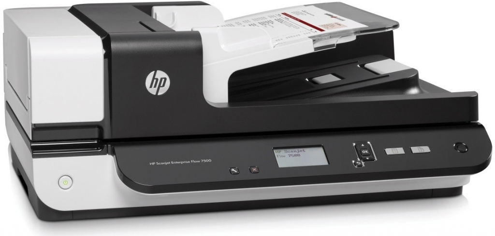
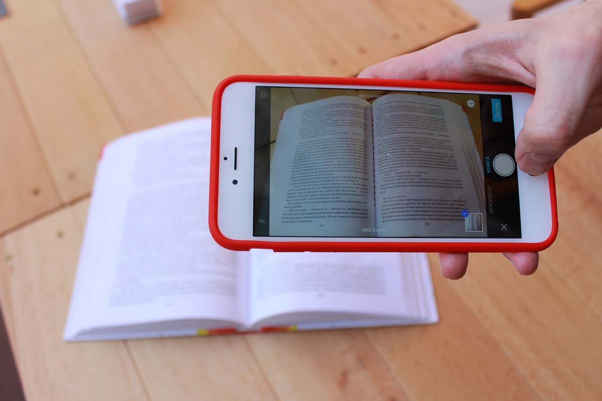

Szkennelési eljárások
Másolás és szkennelés nélkül már nem tudjuk elképzelni, hogy dolgozzunk a dokumentumokkal. Csakúgy, mint a nyomtatás, ezek a szolgáltatások is fontosak, és a minőségi eredmények is számítanak. Az otthona vagy egy vállalkozó kis irodája számára a többfunkciós multifunkciós készülék ideális megoldás. Egy eszközzel kiváló minőségű nyomtatást, másolást és szkennelést végezhet. Ha munkában időt kell megtakarítania, és az eszköz támogatja, használja mind a duplex nyomtatást, mind a duplex szkennelést. Időt és egyben papírt takarít meg. További költségmegtakarításokról a nyomtató alternatív patronjaival vagy tonerjével gondoskodhat.
Asztali és hordozható
Az automatikus lapadagoló (ADF) a szkenner automatikus lapadagolóját jelenti. Ahogy a neve is sugallja, ez egy olyan szolgáltatás, amely biztosítja, hogy a dokumentumok beolvasásra kerüljenek automatikusan, felhasználói művelet nélkül. A többoldalas dokumentumokat nem egyenként kell betölteni, hanem egyszerre. A papíradagolók eltérő papírkapacitással rendelkeznek. A leggyakoribb kapacitás 50lap.Kétféle automatikus adagoló létezik. Szabványos úgynevezett fordított oldal, amely beolvassa a dokumentum egyik oldalát, elforgatja azt, és a másik oldalát beolvassa, és a Duplex - DADF, kétoldalas dokumentumadagolók. Ezzel egyszerre beolvassa a dokumentum mindkét oldalát. A nagy előnye a gyorsabb kétoldalas szkennelés.
Mobil szkennelés
Az önálló szkennerek vagy az MFP-összetevők mellett ma már számíthat okostelefonjára. Csak egy kamera és egy szkennelési aplikáció alkalmazása szükséges. Néhány telefon standard funkcióként még ezt a funkciót is tartalmazza. Az iPhone készülékkel közvetlenül szkennel be egy dokumentumot az iOS-hoz tartozó jegyzetek alkalmazás segítségével. Csak nyissa meg a jegyzeteket, és válassza a dokumentum beolvasását. A beolvasást azonban jpeg fájlként menti el. Vannak olyan alkalmazások, amelyek másolják a beolvasott dokumentumot más formátumban, például pdf formátumban.
Ha időnként be kell szkennelnie valamit a Google Playből vagy az AppStore alkalmazásboltból, sok minőségi alkalmazást találhat. Néhány fizetős, de ingyenesen letölthető verzióban is elérhető.
Fotószkennelés
Egyszerű szkennelések igazolványképtől az A3 vagy afeletti méretekig; Nagy felbontású szkennelések, például régi, kis fényképekről, és ezek újra-nyomtatása nagyban; Digitális képszerkesztések: Retusálás, felújítás, háttér-csere, képek egyesítése; Ajándék képek (mozaik, kollázs) előállítása egyedi igények alapján, nyomdai előkészítése; Egyedi grafikák elkészítése: DVD-CD borítók, meghívók, stb. Hogyan lesz a régi papírképekből csodaszép digitális fotó? Minden képnél egyesével áttöröljük a képet egy finom lószőr ecsettel. Karcmentes törlővel megtisztítjuk a szkenner üvegét. Beszkenneljük a fotókat 48 biten. (Erre a hagyományos szkennerek nem képesek, viszont sokkal nagyobb teret ad a kép javítására a nagyobb színmélység.) A digitális képet beforgatjuk, körbe vágjuk és retusáljuk. A szkennelés előtt mindig megkérdezzük, hogy mit szeretnél csinálni a képekkel? Ezt nem azért tesszük, mert hamar meg akarunk öregedni, hanem azért, mert ez alapján tudjuk kiválasztani a szükséges felbontást. Azaz, ha csak gépen szeretnéd nézegetni, akkor elég egy 300 dpi-s felbontás, azonban, ha ki szeretnéd nagyíttatni, akkor szükség lesz a nagyobb felbontásra.
Műemlékvédelem - 3D szkennerrel
A lézerszkenner a kibocsátott lézerfény visszaérkezési idejét mérve számolja ki a visszaverődési pontok távolságát. Mivel a lézersugarak vízszintes és függőleges síkkal bezárt szögét is rögzíti, ezen pontok iránya is meghatározható. Így a műszer - tengelye körül forogva - végigpásztázza környezetét, másodpercenként akár több millió visszaverődés helyzetét rögzíti és nagy sűrűségű 3D pontfelhőt hoz létre.
Műemlékek felmérésénél a hangsúly az alapos dokumentáláson van. A lézerszkennelés egyaránt megkönnyíti a helyszíni adatgyűjtést és az irodai adatfeldolgozást is. A távolsági és szögmérési pontatlanságok csökkennek, így gyorsabban elkészíthetők az alakhelyes műszaki rajzok. A nehezen hozzáférhető helyekről (pl. mennyezet, párkánytagozatok, tetőszerkezet) is precíz információkat ad, és segíti a hagyományos módon nem mérhető szerkezetek (pl. kétszeresen görbült felületek) rajzi rögzítését. A pontfelhő további előnye, hogy az objektumok térbeli adatait teljeskörűen tárolja, így utólagos helyszíni mérések nélkül is megfelelő alapja egy későbbi rekonstrukciónak vagy továbbtervezésnek.
3D Szkennerek ipari alkalmazása
A MetraScan 3D egy hordozható 3D szkenner mely a Handyprobe koordináta mérőgép, illetve a Handyscan sorozat szkennereinek előnyeit ötvözi magában. Az új generációs Metrascan immáron a nagysebességű Handyscan sorozat szkennereit használja, mely 16 m3-es méréstartományban biztosítja az autóiparban elvárt pontosságot. A Metrascan rendszer mind mérési, mind reverse engineering feladatok elvégzésére kiválóan alkalmas. Az fejlesztéseknek köszönhetően fényes, illetve krómozott darabok, kezelés (porozás) nélkül szkennelhetők. A mérőrendszer néhány perc alatt telepíthető, és felhasználóbarát kialakításának köszönhetően előképzettség nélkül is használható.

Szkennelt képből Plakát
Egy színes plakát nyomtatásának költségét meghatározó tényezők többek közt a papírlap minősége és a papírlap mérete
A következő űrlapon plakátnyomtatáshoz lehet árat kalkulálni: